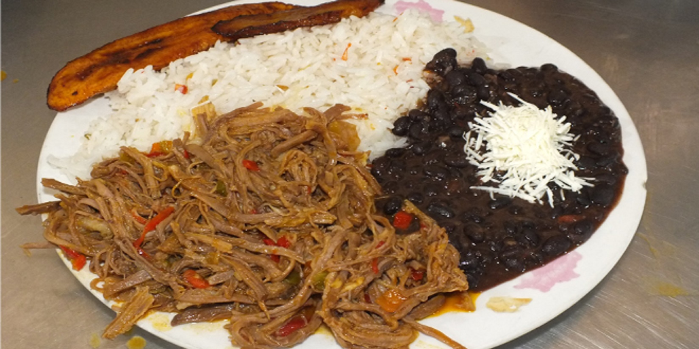

Pabellon Criollo
05/10/2019, Buenos Aires 
El pabellón criollo es un plato tradicional de Venezuela reconocido como el plato nacional por excelencia que forma parte de la gastronomía venezolana. El pabellón criollo tradicional está compuesto por arroz blanco cocido, carne mechada, caraotas negras y tajadas de plátano maduro frito.
La historia del pabellón data de los tiempos de la colonia, probablemente del siglo XVIII, y según se cuenta es básicamente una reunión de "sobras" de comidas anteriores realizada por los esclavos de las haciendas: así la carne, el arroz y las caraotas negras generalmente databan de un día anterior o dos, siendo las tajadas de plátano lo único que se preparaba en el momento.
Se suele hacer referencia a que el plato representa a las tres grandes culturas venezolanas, europea (blanco: arroz), indígena (moreno: carne) y africana (negro: caraotas). Sin embargo está afirmación es meramente poética y se basa en el color de los productos. El arroz es oriundo de Asia y la caraota de Centroamérica.
Carne
1. Corte el ajo y la cebolla al medio.
2. En una cacerola con abundante caldo, la cebolla y el ajo cocine la carne.
3. Desmenuce la carne y elimine la grasa.
4. Pique la cebolla de verdeo.
5. Corte los morrones al medio, elimine las semillas, las nervaduras y pique finamente.
6. Pele los tomates y corte en cubos.
7. En una cacerola caliente con aceite saltee la carne desmenuzada con el la cebolla de verdeo picada y el morrón.
8. Incorpore el tomate, sal y el puré de tomates.
Caraotas
1. Hidrate los porotos negros en agua durante 4 horas.
2. Pique la cebolla.
3. Corte el morrón al medio, elimine las semillas, las nervaduras y pique finamente.
4. Corte la panceta en cubos.
5. Cocine en abundante agua hirviendo hasta que se consuma el agua.
6. Agregue un poco mas de agua, la cebolla picada, el morrón, la panceta, el papelón y continúe la cocción.
Plátanos fritos
1. Pele los plátanos y corte en rebanadas al sesgo.
2. En una sartén con aceite fría el plátano.
3. Escurra sobre papel absorbente.
¡Disfrútenlo!